👨💼 Admin Restoran
- Mengelola kategori menu
- Menambah & mengedit menu makanan/minuman
- Memonitor pesanan masuk secara real-time
- Mengelola meja & kode QR
- Melihat dashboard & analitik penjualan
- Perencanaan stok dengan regresi linear
- Edit profil & informasi restoran
🛡️ Super Admin
- Memonitor seluruh restoran terdaftar
- Menambah & menghapus data restoran
- Mengelola akun admin restoran
- Melihat menu tiap restoran
- Restore akun admin yang dinonaktifkan
- Dashboard ringkasan seluruh sistem
Login ke Sistem
Cara masuk ke halaman admin dan superadmin
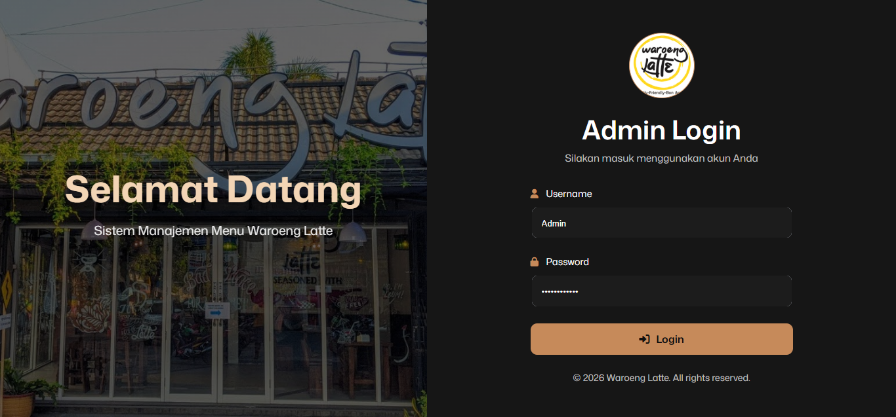
- Buka browser dan akses URL sistem
- Masukkan Email dan Password pada form login
- Klik tombol Masuk
- Sistem akan mengarahkan ke dashboard sesuai role (Admin / SuperAdmin)
Jika lupa password, hubungi SuperAdmin untuk mereset akun Anda.
Dashboard Admin ADMIN
Halaman utama yang menampilkan ringkasan data dan analitik restoran
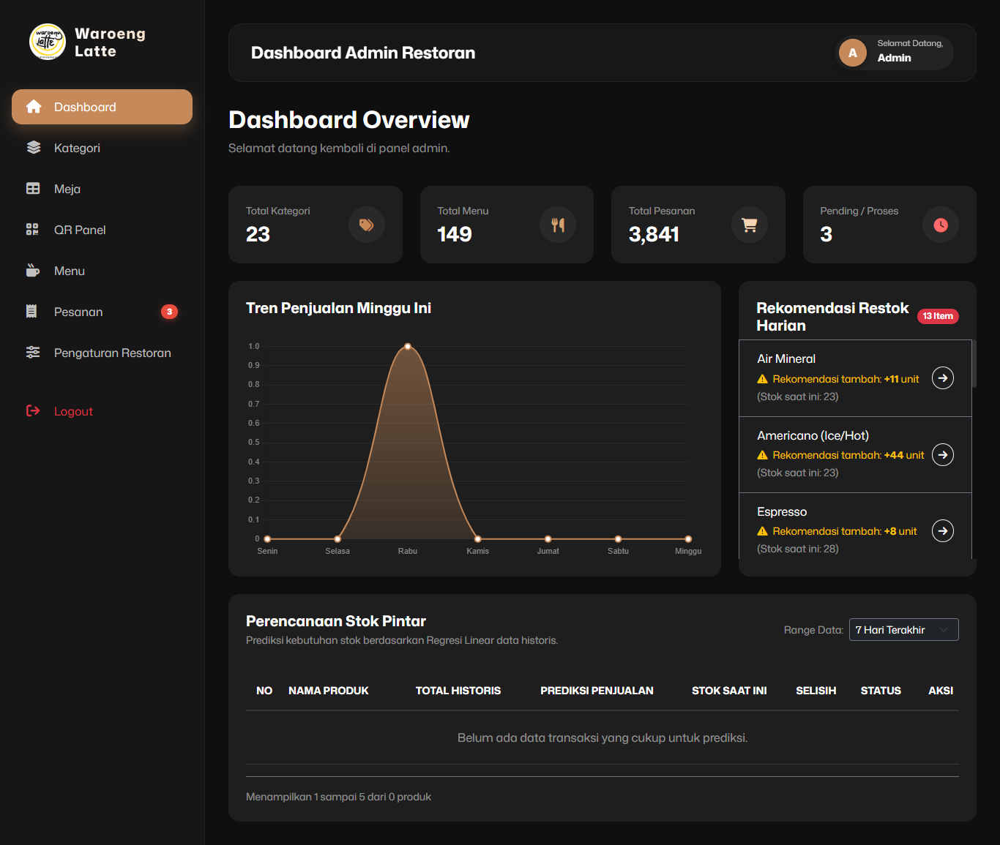
- Pilih periode analisis (7, 14, 30, atau 60 hari)
- Sistem menghitung persamaan regresi Y = a + bX per menu
- Kolom Status menunjukkan apakah stok perlu ditambah atau masih aman
Periode 7 dan 14 hari mungkin tidak menampilkan hasil jika data penjualan belum cukup untuk dihitung secara statistik.
Kelola Kategori Menu ADMIN
Menambah, mengedit, dan menghapus kategori untuk pengelompokan menu
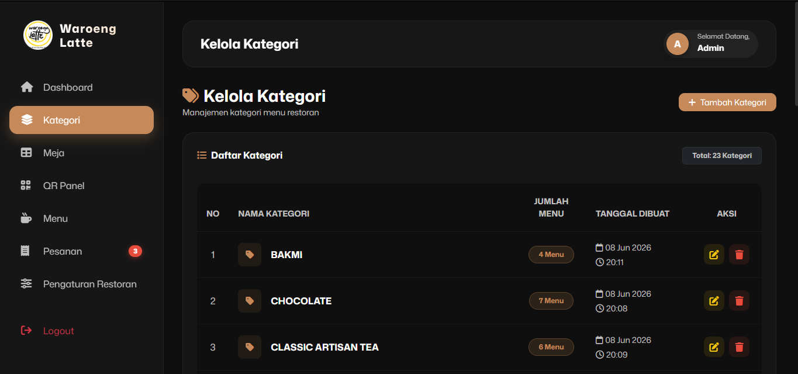
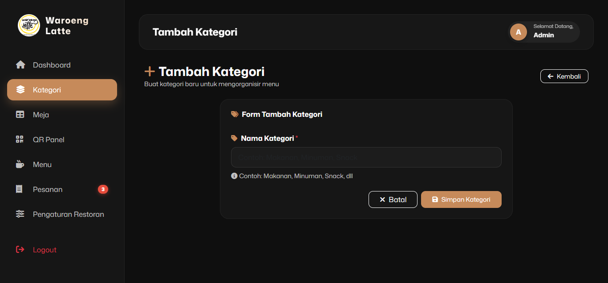
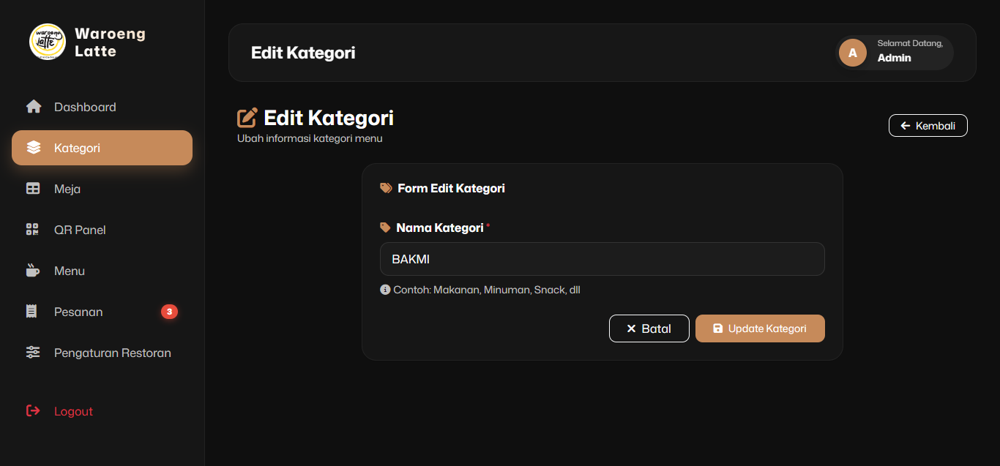
Menghapus kategori yang masih memiliki menu aktif tidak diperbolehkan. Pindahkan atau hapus menu terlebih dahulu.
Kelola Pesanan ADMIN
Memonitor dan memperbarui status pesanan dari pelanggan secara real-time
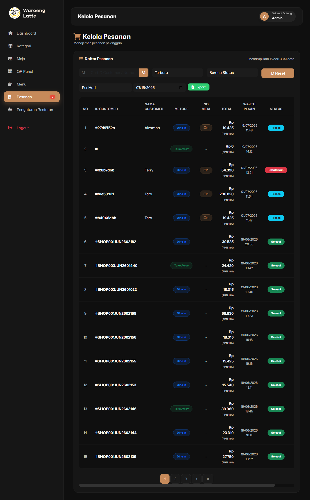


- Buka detail pesanan yang ingin diubah statusnya
- Pilih status baru dari dropdown yang tersedia
- Klik Update Status
- Pelanggan akan menerima notifikasi perubahan status
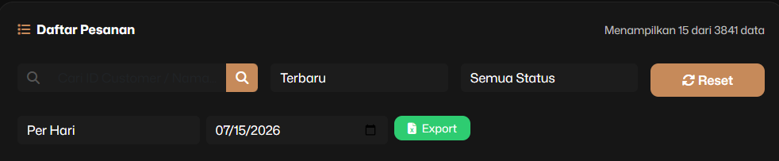
- Atur filter tanggal sesuai rentang yang diinginkan
- Klik tombol Export
- File akan otomatis terunduh ke komputer Anda
Kelola Meja & QR Code ADMIN
Mengatur nomor meja dan menghasilkan kode QR untuk pemesanan mandiri pelanggan
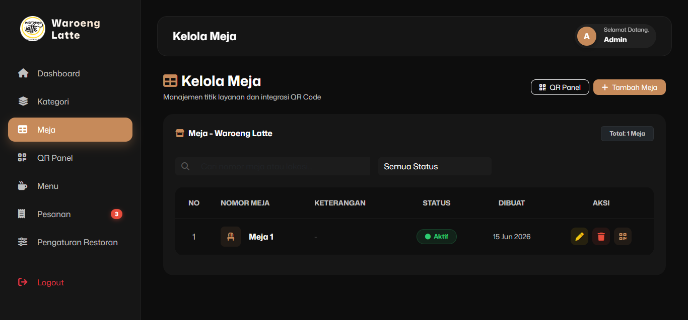


Edit Profil Restoran ADMIN
Memperbarui informasi dan identitas restoran yang tampil ke pelanggan
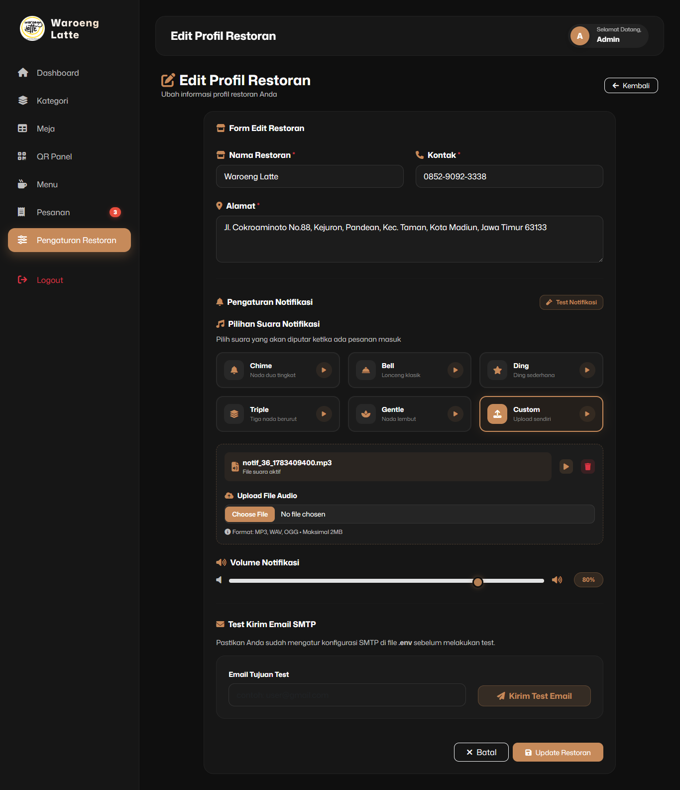
- Buka menu Profil / Restoran di sidebar
- Ubah informasi yang diperlukan pada form
- Upload foto restoran baru jika ingin mengganti
- Klik Simpan Perubahan
Dashboard SuperAdmin SUPERADMIN
Ringkasan keseluruhan sistem: total restoran, admin, dan statistik platform
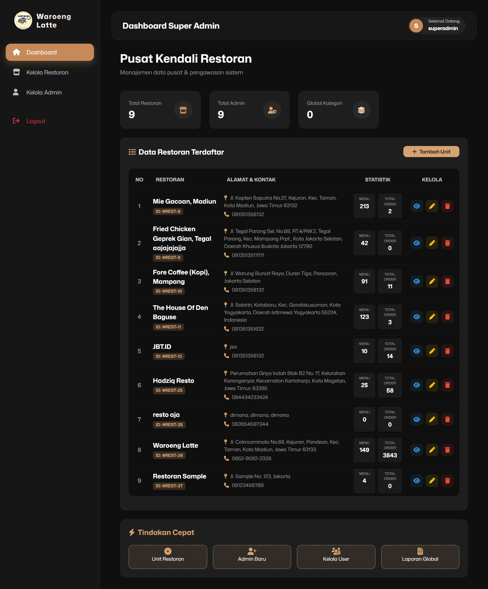
Kelola Restoran SUPERADMIN
Menambah, mengedit, menghapus, dan memantau semua restoran di platform


- Isi Nama Restoran, alamat, dan nomor telepon
- Upload Logo/Foto Restoran
- Isi Email dan Password untuk akun admin restoran tersebut
- Klik Simpan — sistem otomatis membuat akun admin baru

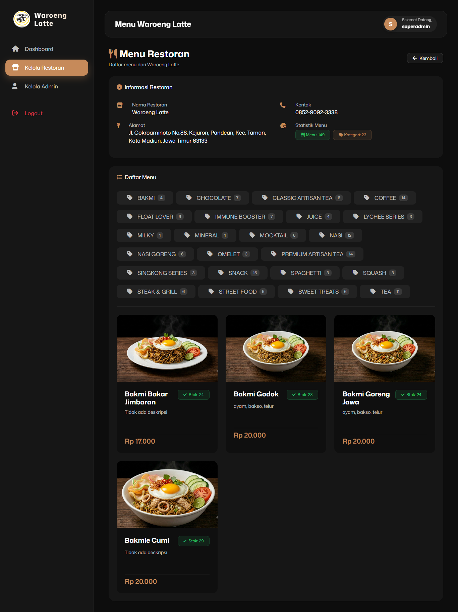
Menghapus restoran akan menghapus seluruh data terkait (menu, pesanan, dll). Pastikan data sudah diarsipkan sebelum menghapus.
Kelola Akun Admin SUPERADMIN
Menambah, menonaktifkan, dan memulihkan akun admin restoran
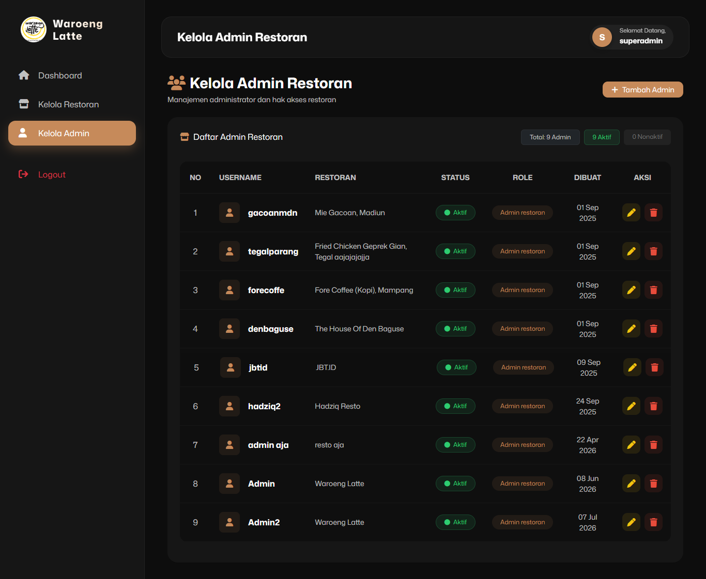
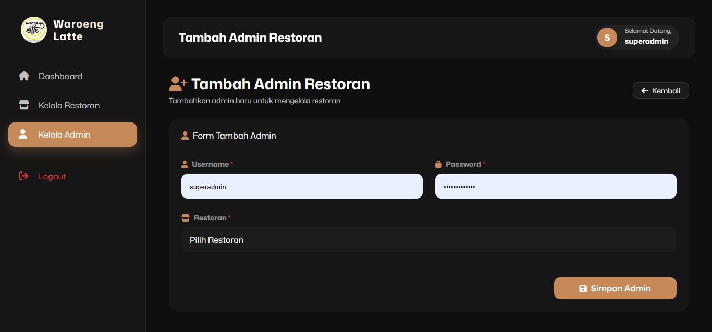
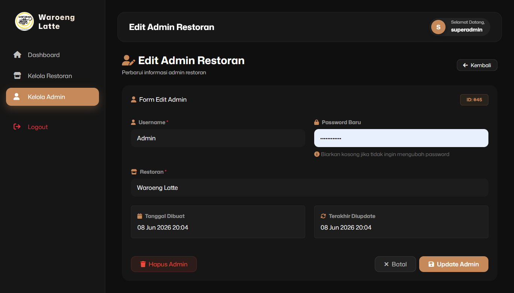
- Klik Nonaktifkan untuk menonaktifkan akun admin (data tetap tersimpan)
- Akun yang dinonaktifkan akan muncul di daftar dengan status Tidak Aktif
- Klik Pulihkan untuk mengaktifkan kembali akun admin
Gunakan fitur Nonaktifkan daripada Hapus Permanen agar data histori pesanan tetap tersimpan.